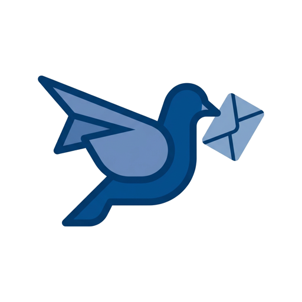

先规划，再执行
每个场景先展示计划和正在调用的工具，你随时知道 Postbird 做到了哪一步。

Postbird选择一个真实场景，亲手体验 Postbird 如何把邮件、数据和想法变成可检查、可交付的结果。
所有数据均为虚构示例，交互只发生在你的浏览器中。
每个场景先展示计划和正在调用的工具，你随时知道 Postbird 做到了哪一步。
收件人、主题、正文和附件形成预览，明确确认后才进入模拟发送阶段。
结果可以下载、打开和继续编辑，让 AI 的工作落到可复用的成果上。